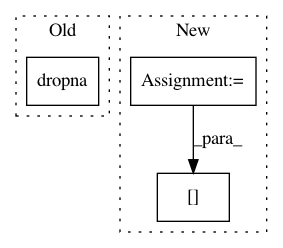

50213024393ab41c88287702c78cf361d3b82e49,aif360/sklearn/datasets/utils.py,,standarize_dataset,#,5
Before Change
// Index-wise drops
if dropna:
df.dropna()
df = df.set_index(prot_attr, drop=False, append=True)
y = df.pop(target)
After Change
// Index-wise drops
if dropna:
notna = df.notna().all(axis=1) & y.notna()
df = df.loc[notna]
y = y.loc[notna]
if sample_weight is not None:
return namedtuple("WeightedDataset", ["X", "y", "sample_weight"])(
In pattern: SUPERPATTERN
Frequency: 4
Non-data size: 3
Instances
Project Name: IBM/AIF360
Commit Name: 50213024393ab41c88287702c78cf361d3b82e49
Time: 2020-02-19
Author: hoffman.sc@gmail.com
File Name: aif360/sklearn/datasets/utils.py
Class Name:
Method Name: standarize_dataset
Project Name: nilmtk/nilmtk
Commit Name: 5eeca7d385178092790e08c1d5ad6cbcff35d3dc
Time: 2014-12-11
Author: jack-list@xlk.org.uk
File Name: nilmtk/metergroup.py
Class Name: MeterGroup
Method Name: load
Project Name: nilmtk/nilmtk
Commit Name: b7693e8420c63bcd7544ee1bc9c2a733408a2794
Time: 2014-05-22
Author: jack-list@xlk.org.uk
File Name: nilmtk/metergroup.py
Class Name: MeterGroup
Method Name: prepare_for_disaggregation
Project Name: soft-matter/trackpy
Commit Name: 99b05d999c8b5b29cf02742957168b88fdfc6f94
Time: 2012-12-05
Author: daniel.b.allan@gmail.com
File Name: mr/wire_models.py
Class Name: Model
Method Name: __init__